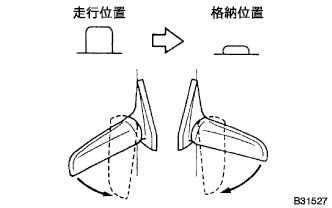
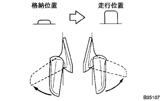
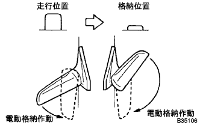
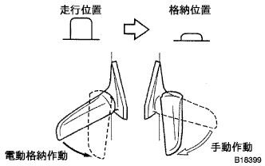
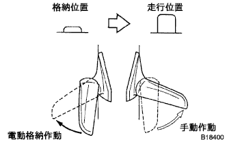

電動ミラーシステム 機能点検 |
イグニッションスイッチをACCにする。
|  |
ドアミラー左右が走行位置のとき、格納スイッチを格納位置にすると、ドアミラー左右が格納位置へ移動することを確認する。
|  |
ドアミラー左右が格納位置のとき、格納スイッチを走行位置にすると、ドアミラー左右が走行位置へ移動することを確認する。
|  |
ドアミラー左右が走行位置のとき、片側のドアミラーを手で車両前方に倒して格納スイツチを格納位置にすると、ドアミラー左右が格納位置まで移動することを確認する。
|  |
ドアミラー左右が走行位置のとき、片側のドアミラーを手で格納位置へ倒して格納スイッチを格納位置にすると、ドアミラー左右が格納位置まで移動することを確認する。
|  |
ドアミラー左右が格納位置のとき、片側のドアミラーを手で走行位置へ起こして格納スイッチを走行位置にすると、反対側のドアミラーのみ走行位置まで移動することを確認する。
ドアミラーが作動中にイグニッションスイッチをOFFにするとドアミラーが停止し、イグニッションスイッチを再度ACCにするとドアミラーが作動を再開することを確認する。
ドアミラー作動中にドアミラーを手で制止するとドアミラーが停止し、格納スイツチを切り替えると反対へ移動することを確認する。